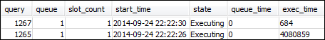
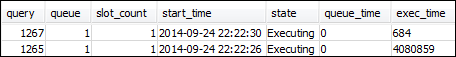

Sección 1: Comportamiento del procesamiento de la cola predeterminada
Antes de comenzar a configurar la WLM manual, es útil entender el comportamiento predeterminado del procesamiento de las colas en Amazon Redshift. En esta sección, crea dos vistas de bases de datos que devuelvan la información de varias tablas de sistema. Luego, ejecuta algunas consultas de prueba para ver cómo se dirigen las consultas de forma predeterminada. Para obtener más información acerca de las tablas de sistema, consulte Referencia de las tablas y vistas de sistema.
Paso 1: Creación de la vista WLM_QUEUE_STATE_VW
En este paso, creará una vista denominada WLM_QUEUE_STATE_VW. Esta vista devuelve la información de las siguientes tablas de sistema.
Esta vista se utiliza en todo el tutorial para supervisar lo que les ocurre a las colas después de modificar la configuración de WLM. En la siguiente tabla se describen los datos que devuelve la vista WLM_QUEUE_STATE_VW.
| Columna | Descripción |
|---|---|
| cola | El número asociado a la fila que representa una cola. El número de cola determina el orden de las colas en la base de datos. |
| description | Valor que describe si una cola está disponible solo para algunos grupos de usuarios, algunos grupos de consultas o todos los tipos de consultas. |
| slots | El número de slots asignados a la cola. |
| mem | La cantidad de memoria, en MB por slot, asignada a la cola. |
| max_execution_time | La cantidad de tiempo que una consulta tiene permitido ejecutarse antes de terminarse. |
| user_* | Valor que indica si los caracteres comodines pueden coincidir con los grupos de usuarios en la configuración de WLM. |
| query_* | Valor que indica si los caracteres comodines pueden coincidir con los grupos de consultas en la configuración de WLM. |
| queued | El número de consultas que están en espera en la cola para ser procesadas. |
| executing | La cantidad de consultas que se encuentran en ejecución. |
| executed | La cantidad de consultas que se han ejecutado. |
Creación de la vista WLM_QUEUE_STATE_VW
-
Abra Amazon Redshift RSQL y conéctese a la base de datos de ejemplo de TICKIT. Si no dispone de esta base de datos, consulte Requisitos previos.
-
Ejecute la siguiente consulta para crear la vista WLM_QUEUE_STATE_VW.
create view WLM_QUEUE_STATE_VW as select (config.service_class-5) as queue , trim (class.condition) as description , config.num_query_tasks as slots , config.query_working_mem as mem , config.max_execution_time as max_time , config.user_group_wild_card as "user_*" , config.query_group_wild_card as "query_*" , state.num_queued_queries queued , state.num_executing_queries executing , state.num_executed_queries executed from STV_WLM_CLASSIFICATION_CONFIG class, STV_WLM_SERVICE_CLASS_CONFIG config, STV_WLM_SERVICE_CLASS_STATE state where class.action_service_class = config.service_class and class.action_service_class = state.service_class and config.service_class > 4 order by config.service_class; -
Ejecute la siguiente consulta para ver la información que contiene la vista.
select * from wlm_queue_state_vw;A continuación se muestra un resultado de ejemplo.

Paso 2: Creación de la vista WLM_QUERY_STATE_VW
En este paso, crea una vista denominada WLM_QUERY_STATE_VW. Esta vista devuelve la información de la tabla de sistema STV_WLM_QUERY_STATE.
Esta vista se utiliza en todo el tutorial para supervisar las consultas que están en ejecución. En la siguiente tabla se describen los datos que devuelve la vista WLM_QUERY_STATE_VW.
| Columna | Descripción |
|---|---|
| query | El ID de la consulta. |
| cola | El número de cola. |
| slot_count | El número de slots asignados a la consulta. |
| start_time | La hora en que comenzó la consulta. |
| estado | El estado de la consulta, como executing (en ejecución). |
| queue_time | El número de microsegundos que la consulta estuvo en la cola. |
| exec_time | La cantidad de microsegundos que estuvo la consulta en la cola. |
Creación de la vista WLM_QUERY_STATE_VW
-
En RSQL, ejecute la siguiente consulta para crear la vista WLM_QUERY_STATE_VW.
create view WLM_QUERY_STATE_VW as select query, (service_class-5) as queue, slot_count, trim(wlm_start_time) as start_time, trim(state) as state, trim(queue_time) as queue_time, trim(exec_time) as exec_time from stv_wlm_query_state; -
Ejecute la siguiente consulta para ver la información que contiene la vista.
select * from wlm_query_state_vw;A continuación se muestra un resultado de ejemplo.

Paso 3: Ejecución de consultas de prueba
En este paso, ejecuta consultas desde varias conexiones en RSQL y revisa las tablas de sistema para determinar cómo se dirigieron las consultas para su procesamiento.
Para este paso, necesita tener dos ventanas RSQL abiertas:
-
En la ventana RSQL 1, se ejecutan consultas que monitoreen el estado de las colas y consultas que utilicen las vistas ya creadas en este tutorial.
-
En la ventana RSQL 2, se pueden ejecutar consultas de ejecución prolongada para cambiar los resultados que se encuentren en la ventana 1 de RSQL.
Ejecución de las consultas de prueba
-
Abra las dos ventanas RSQL. Si ya tiene una ventana abierta, solo necesita abrir una segunda. Puede utilizar la misma cuenta de usuario para ambas conexiones.
-
En la ventana RSQL 1, ejecute la siguiente consulta.
select * from wlm_query_state_vw;A continuación se muestra un resultado de ejemplo.

Esta consulta devuelve un resultado autorreferencial. La consulta que se encuentra en ejecución es la instrucción SELECT de esta vista. Una consulta en esta vista siempre devuelve como mínimo un resultado. Compara este resultado con el resultado que se produzca después de comenzar la consulta de ejecución prolongada, en el siguiente paso.
-
En la ventana RSQL 2, ejecute una consulta desde la base de datos de ejemplo TICKIT. Esta consulta se debe ejecutar por un minuto aproximadamente, de modo que tenga tiempo para explorar los resultados de las vistas WLM_QUEUE_STATE_VW y WLM_QUERY_STATE_VW que creó antes. En algunos casos, es posible que encuentre que la consulta no se ejecuta durante el tiempo necesario para consultar ambas vistas. En estos casos, puede aumentar el valor del filtro en
l.listidpara que se ejecute durante más tiempo.nota
Para reducir el tiempo de ejecución de las consultas y mejorar el rendimiento del sistema, Amazon Redshift almacena en caché los resultados de ciertos tipos de consultas en la memoria del nodo principal. Si se ha habilitado el almacenamiento en caché de los resultados, las consultas posteriores se ejecutarán mucho más rápido. Para evitar que la consulta se ejecute con demasiada rapidez, deshabilite el almacenamiento en caché de los resultados para la sesión actual.
Para deshabilitar el almacenamiento en caché de los resultados para la sesión actual, establezca el parámetro enable_result_cache_for_session en
off, tal y como se muestra a continuación.set enable_result_cache_for_session to off;En la ventana RSQL 2, ejecute la siguiente consulta.
select avg(l.priceperticket*s.qtysold) from listing l, sales s where l.listid < 100000; -
En la ventana RSQL 1, consulte WLM_QUEUE_STATE_VW y WLM_QUERY_STATE_VW y compare los resultados con los resultados anteriores.
select * from wlm_queue_state_vw; select * from wlm_query_state_vw;A continuación se incluyen resultados de ejemplo.
 

Observe las siguientes diferencias entre las consultas anteriores y los resultados de este paso:
-
Ahora existen dos filas en WLM_QUERY_STATE_VW. Un resultado es la consulta autorreferencial por la ejecución de una operación SELECT en esta vista. El segundo resultado es la consulta de ejecución prolongada del paso anterior.
-
La columna executing en WLM_QUEUE_STATE_VW aumentó de 1 a 2. Esta entrada de la columna significa que hay dos consultas en ejecución en la cola.
-
La columna executed se incrementa cada vez que ejecute una consulta en la cola.
La vista WLM_QUEUE_STATE_VW es útil para obtener una vista general de las colas y saber cuántas consultas se están procesando en cada cola. La vista WLM_QUERY_STATE_VW es útil para obtener una vista más detallada de las consultas individuales que se están ejecutando.